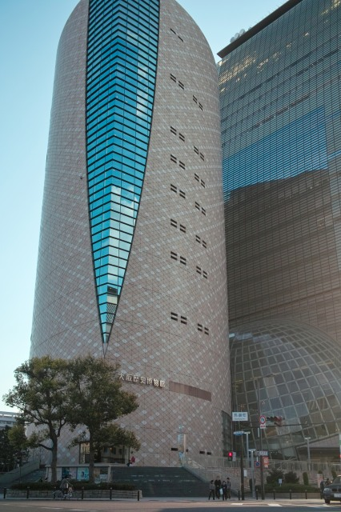
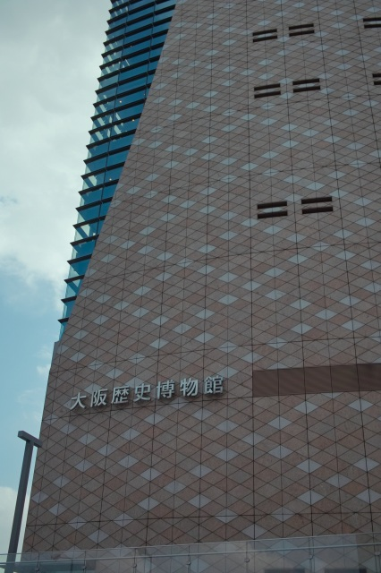
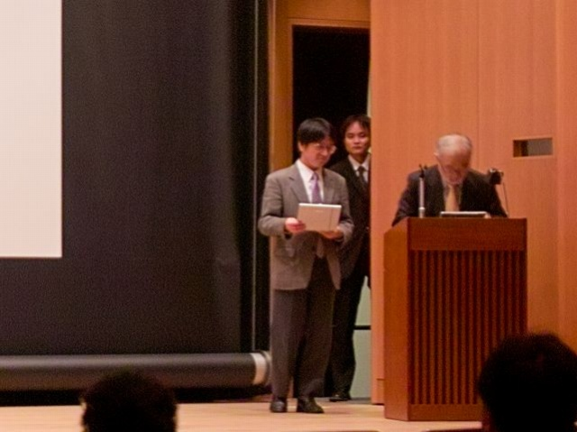
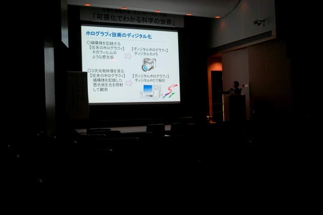
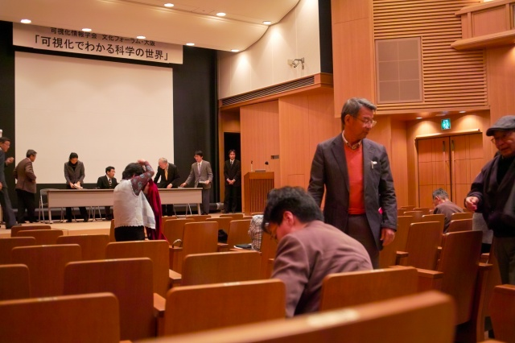

村田先生が文化フォーラム・「可視化でわかる科学の世界」で講演とパネルディスカッションに出席しました．
各先生の貴重な話題はたのしかったです！終わってから大阪城公園をウロウロ（迷子？）．
隣はNHKで，向かいは大阪府警．
出番です！
ディジタルホログラフィとは？
質疑応答中＠パネルディスカッション
おしまい
ひさしぶりの大阪城．キレイになってる．

旧陸軍本部とクリスタルタワー
結局JR京橋駅まで移動．迷子ではありません！
近くによるとデカイです．ビル風がすごい．
| ・可視化情報学会 文化フォーラム・大阪 「可視化でわかる科学の世界」＠大阪歴史博物館 (H22.03.21) | |||
村田先生が文化フォーラム・「可視化でわかる科学の世界」で講演とパネルディスカッションに出席しました． |
|||
|

隣はNHKで，向かいは大阪府警． |

| ||
|

出番です！ |

ディジタルホログラフィとは？ | ||
|
質疑応答中＠パネルディスカッション |

おしまい | ||
|
ひさしぶりの大阪城．キレイになってる． |
旧陸軍本部とクリスタルタワー | ||
|
結局JR京橋駅まで移動．迷子ではありません！ |
近くによるとデカイです．ビル風がすごい． | ||